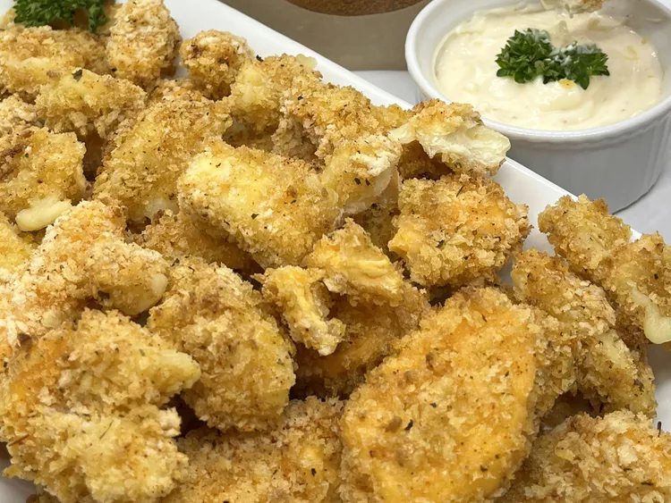

Air Fryer Cheese Curds

Use your air fryer to make cheese curds if you are looking to cut down on
grease. Being from Wisconsin, fried cheese curds are everywhere, and quite
often they are greasy. These air fried cheese curds give you the nice
golden color of traditionally fried cheese curds, but allow the ooey gooey
cheese to be the star. Go ahead and dip…or dunk them in the roasted garlic
aioli; your taste buds will thank you. JBJ Soul Seasoning blend from the
JBJ Soul Kitchen gives these cheese curds a little extra kick. Perfect for
parties, to enjoy while watching your favorite game, or when you need to
feed your cheese curd cravings these air fried cheese curds will become
your new favorite.
Ingredients
Roasted Garlic Aioli:
- 3 cloves garlic, peeled
- 1 teaspoon extra virgin olive oil
-
1/2 teaspoon soul food seasoning (such as JBJ Soul Kitchen Soul
Seasoning)
- 1/2 cup mayonnaise
- 1 tablespoon lemon juice
Cheese Curds:
- 10 ounces cheese curds
- 1 1/4 cups all-purpose flour
-
4 teaspoons soul food seasoning (such as JBJ Soul Kitchen Soul
Seasoning), divided
- 1 large egg
- 1 1/2 cups milk
- 2 1/4 cups panko bread crumbs
- 1 teaspoon vegetable oil, or as needed for spraying
- nonstick cooking spray
Steps
-
For Aioli: Combine garlic cloves, olive oil, and the 1/2 teaspoon soul
seasoning in a small bowl and toss to coat. Wrap garlic tightly in a
small piece of foil.
-
Preheat the air fryer to 375 degrees F (190 degrees C). Place wrapped
garlic in the air fryer basket, and air fry for 15 minutes.
-
Remove garlic from the air fryer and place in a small bowl. Mash roasted
garlic with the back of a spoon. Let stand for 30 minutes.
-
Stir mayonnaise and lemon juice into the mashed garlic until well
combined. Cover and refrigerate for 30 minutes before serving.
-
For Cheese Curds: Place cheese curds on a large rimmed baking sheet
lined with parchment paper. Place the tray with cheese curds in the
freezer for 30 minutes.
-
Meanwhile, whisk flour and 1 teaspoon soul seasoning together in a
shallow bowl. Whisk eggs and milk together In a separate bowl until
smooth and cohesive. Stir panko and remaining 3 teaspoons soul seasoning
together in a third shallow bowl.
-
Remove cheese curds from the freezer. Working in batches, dip cheese
curds into the flour to coat well, then into the egg mixture, making
sure to shake off any excess. Dip curds again in flour mixture and again
into egg mixture. Finally, dip curds into panko to fully coat with
breadcrumbs. Use your dry hand to pack on panko so that it sticks well.
Place breaded cheese curds back onto the baking sheet. When all cheese
curds are breaded, return the baking sheet to the freezer for 30
minutes.
-
Preheat the air fryer to 350 degrees F (175 degrees C). Remove tray from
freezer. Using a mister, lightly spray both sides of the cheese curds
with vegetable oil. Coat the air fryer basket with nonstick cooking
spray.
-
Working in batches, place cheese curds in the air fryer basket in a
single layer. Air fry until golden brown and crispy on both sides,
flipping halfway through cooking time, 4 to 6 minutes.
-
Let stand in the air fryer for 1 to 2 minutes before serving. Serve with
roasted garlic aioli.
Homepage